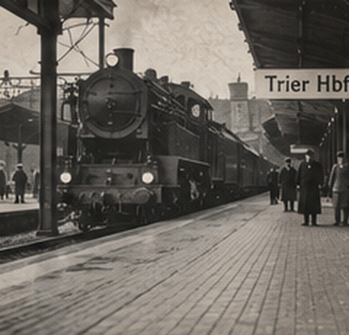

Service documents
Enlistment, training, vessel assignments, discharge, unit material, and any period correspondence.
DOCUMENTED VETERAN PROFILE
1925–2012 · Navy veteran · railroad employee · married Anamae Lezer in 1950
LIFE AT A GLANCE
Edward’s profile is intentionally more than a service card. It keeps his Navy history, railroad career, marriage, and complex kinship story together while keeping the evidence labels readable.
Read Service & Legacy
RELATIONSHIPS
Adopted Edward in 1929. These relationships are recorded as adoptive.
Reported birth parents. This relationship type remains distinct from the adoptive family model while supporting documents are collected.
Married in 1950, linking the Lauermann/Brennan and Lezer/Grabinski chapters.
ATTACHABLE RECORD TYPES
Enlistment, training, vessel assignments, discharge, unit material, and any period correspondence.
Great Northern/Burlington Northern payroll and retirement records, BLE Division 143 material, directories, and photographs.
Family recollections may be preserved here, separately marked until independently documented.
Authentic images will receive source, date, owner/repository, and a clear “Original” label when supplied.